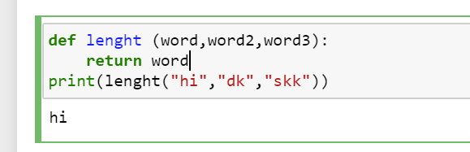

היי, חג שמח.
המחברת האת ממש קשה ואני לא מבין את ההסברים יותר מדי.
עד למחברת הזאת הכל היה ממש קל ועם הסברים ברורים.
אני אשמח לעזרה לגבי תרגיל 19.
אולי רמז? טיפ?

היי, חג שמח.
המחברת האת ממש קשה ואני לא מבין את ההסברים יותר מדי.
עד למחברת הזאת הכל היה ממש קל ועם הסברים ברורים.
אני אשמח לעזרה לגבי תרגיל 19.
אולי רמז? טיפ?
קודם כל אם יש נקודות והסברים שלא הבנת אתה מוזמן לשאול לגביהם, בדיוק בשביל זה הפורום נולד.
דבר שני, הפונקציה המובנית והשימושית שבה ניתן לבדוק מה אורך המחרוזת מופיעה ממש באותה מחברת, מעט למעלה. נסה לחשוב איך להיעזר בה ובתנאים שנלמדו במחברות הקודמות של השבוע השני על-מנת לכתוב את הפונקציה המבוקשת 
תודה על היענות.
אני ראיתי את ההסבר על המחרוזת. עדיין לא הבנתי איך ליישם בתרגיל המדובר.
שאלה נוספת שמסקרנת אותי, באותה מחברת יש תרגיל נוסף: "כתבו פונקציה שמקבלת שני מספרים ומחזירה את הגדול מביניהם.
רוצים אתגר? פתרו את התרגיל ב־4 שורות. "
הצלחתי לפתור ב6 שורות, מסקרן אותי לדעת ובטח ישפר איך פותרים ב4 שורות.
תודה רבה על הכל
לא להבין איך ליישם יכול להתייחס לכמה חלקים, האם תוכל להיות ספציפי יותר? הרבה פעמים אנשים מתייאשים ואומרים שהם לא מבינים בכלל את התרגיל כשהם כבר באמצע או אפילו בסוף הדרך
האם נתקעת בלהגדיר פונקציה? בלקלוט 3 מחרוזות? בלמצוא מי מבין המחרוזות ארוכה יותר? בלהחזיר את התשובה אחרי שגילית אותה? בכמה מהנ"ל?
לגבי האתגר - אם הדרך שלך כבר עובדת אתה מוזמן להתייעץ איתי עליה בפרטי כדי לא לספיילר לאנשים את הפתרון לזה.
מתייחס כמחרוזת למשתנה
אז איך כן אחרת? האם להגדיר כבר מראש מה הם הסטרינגס? אני מספר שעות לא קטן על התרגיל הזה ללא הצלחה
מה הכוונה להגדיר מראש מה המחרוזות? אמורים לקבל את המחרוזות כארגומנטים בפונקציה
מה שדביר ואני עושים מאוד דומה אחד לשני פרט לשני שינויים:
ניסיתי את התרגיל הזה במספר וריאציות, בכולן עולה לי שגיאה כזו או אחרת של סינטקס.
אחר כך ניסיתי לפרק את התרגיל לגורמים ואז לחבר את הכל ביחד:
פתחתי את untitled של שבוע שעבר ועבדתי עליו כטיוטה.
כשאני קוראת לפונקציה למעשה היא לא רצה. לחילופין מופיעות לי בעיות של סינטקס.
(אני לא רוצה להעלות פתרונות לפורום בכוונה)
לפני שאומר נואש, האם אפשרי להשתמש בחומרי עזר מיוטיוב, רדיט, וכדומה? ניכר שאני מפספסת משהו גדול שלא הבנתי
אם את רוצה את מוזמנת לשלוח לי בפרטי כדי שאנסה להבין יחד איתך איפה הטעות
אם עדיין לא הסתדרת אז התשובה זה
שבפריט שלך את צריכה להגדיר את זה כסטרינג באגומנט בשפרינט
“Blala” לא אמרו את זה נראה לי אני פשוט עשיתי מלא ניסוים עד שהצלחתי… ההסבר

כמו שאת רואה זה החזיר hi כסטרינג ולא עשה שגיאה כמו אצלך
{kind=link}